RFTG — Rental Film To Go
Projet Bloc 2 · BTS SIO SLAM · 2ᵉ année · 2025-2026
RFTG est un projet scolaire autour d'un système de location de DVDs, réalisé dans le cadre du Bloc 2 de 2ᵉ année. Il regroupe quatre composants interconnectés autour d'une même API REST commune (mutualisée avec d'autres étudiants), chacun nommé d'après un personnage de l'univers Mario.
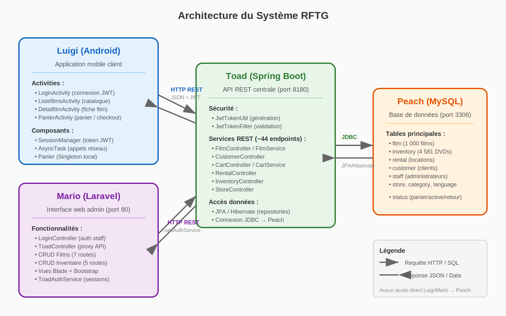
Architecture du système RFTG : les clients (web Mario, mobile Luigi) communiquent avec l'API REST Spring Boot Toad, qui accède à la base MySQL Peach via un ORM JPA.
Luigi
App Android native en Java pour parcourir le catalogue, gérer un panier et louer des films.
Mario
Interface web interne pour la gestion des films, DVDs, clients et locations.
Toad
API REST sécurisée par JWT, pont unique entre les clients, le personnel et la base de données.
Peach
Schéma dérivé de Sakila, enrichi de migrations versionnées (v0.2 → v0.7).
Application mobile Android
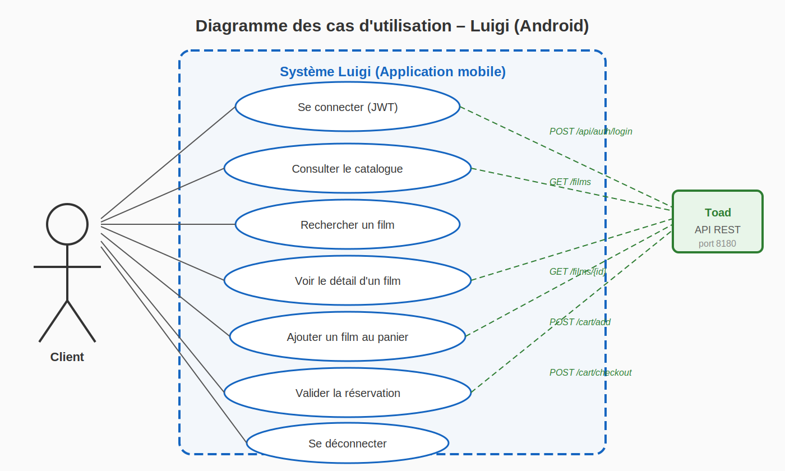
Diagramme des cas d'utilisation côté client : connexion JWT, consultation et recherche du catalogue, gestion du panier, validation de la réservation.
Stack technique
| Langage | Java (Android SDK) |
| Communication réseau | Retrofit + AsyncTask |
| Persistance locale | SQLite |
| Authentification | Token JWT |
Architecture
- Activities — gestion de l'interface et des interactions utilisateur
- AsyncTask — opérations réseau non bloquantes
- Managers Singleton — logique métier centralisée (panier, session, URLs)
- DatabaseHelper — accès SQLite encapsulé
- Adapters — liaison données ↔ vues (RecyclerView)
Parcours utilisateur
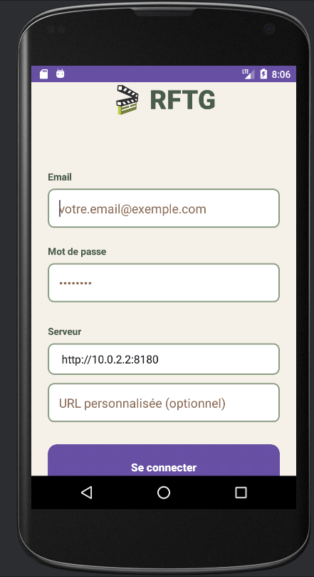
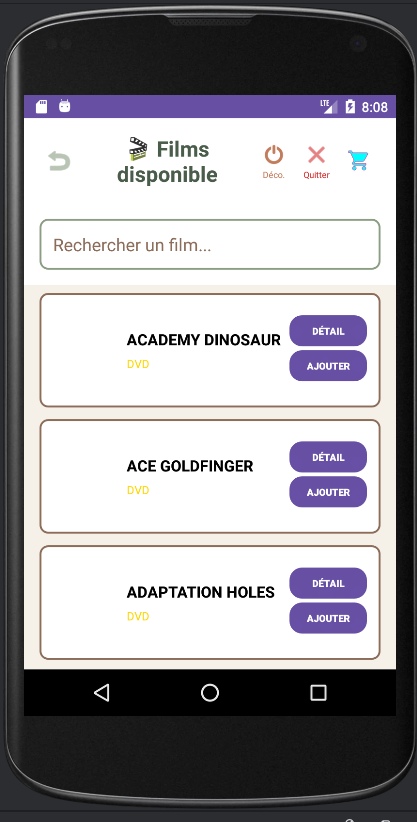
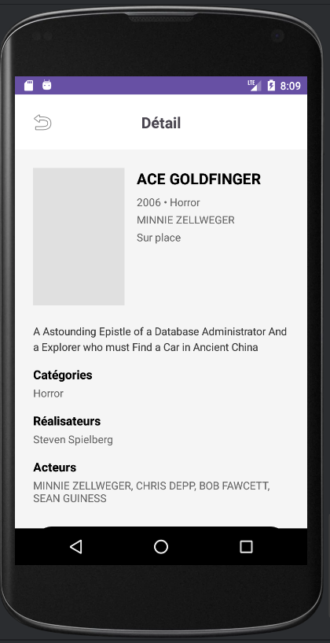
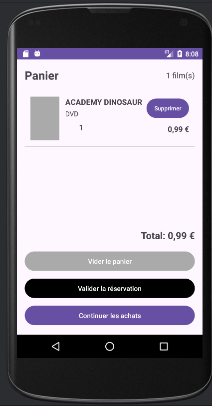
Parcours utilisateur complet sur émulateur Android — de la connexion à la validation de la réservation.
Application web Laravel
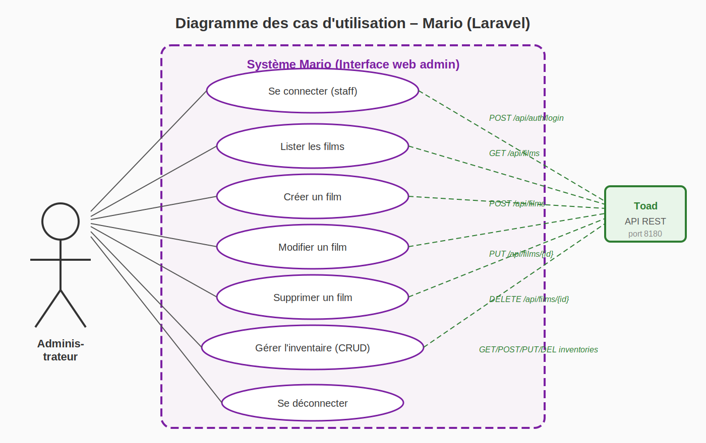
Diagramme des cas d'utilisation côté administrateur : authentification, CRUD complet sur les films, gestion de l'inventaire.
Contexte
Application web de gestion interne pour le personnel administratif. Toutes les données sont consommées via l'API REST Toad — aucune base locale, architecture totalement découplée.
Stack technique
| Backend | PHP 8.2 · Laravel |
| Frontend | Blade · Bootstrap 5 |
| API externe | REST API Toad (microservice Java) |
| Authentification | JWT en session, Bearer token sur appels API |
Fonctionnalités
- Films — liste, fiche détail, création, modification, suppression
- Inventaire DVDs — gestion du stock physique par film
- Clients — CRUD complet avec gestion de l'état actif/inactif
- Locations — suivi temps réel avec changement de statut (En cours / Panier / Terminé)
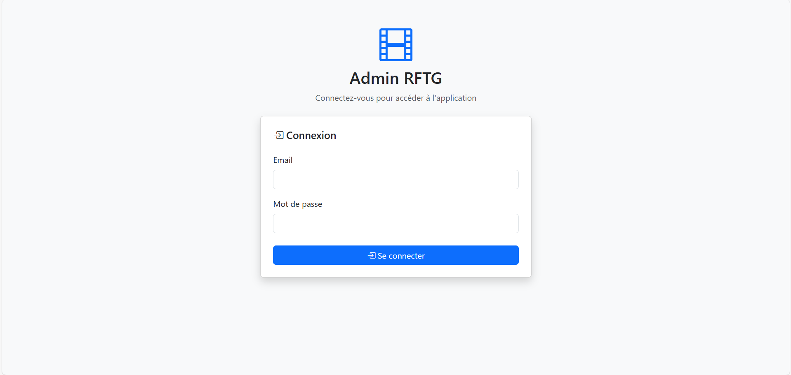
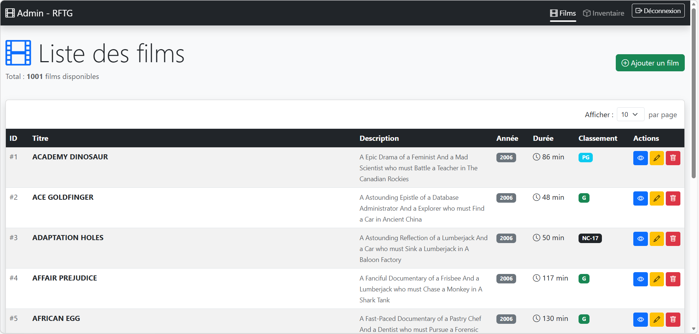
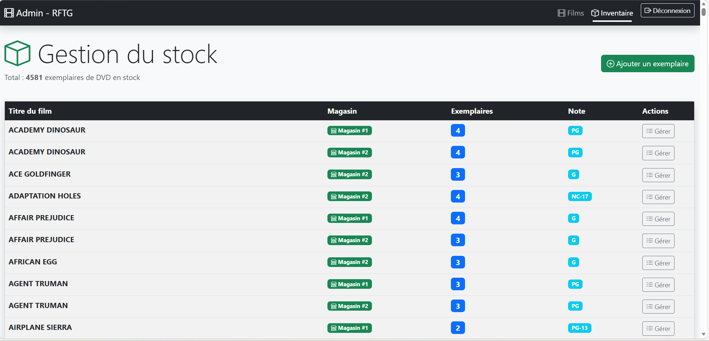
Interface d'administration web : connexion, liste des films (1001 entrées), gestion du stock (4581 exemplaires).
API REST centrale
Présentation
Toad est l'API REST commune au projet RFTG. Elle expose les routes de consultation du catalogue, de gestion du panier, de location, d'administration des stocks, des employés et des transactions. L'API est mutualisée entre plusieurs étudiants travaillant chacun sur leur composant.
Stack technique
| Backend | Spring Boot (Java 17) |
| Sécurité | Spring Security + JWT |
| Persistance | Spring Data JPA / Hibernate |
| Base de données | MySQL 8 |
| Build | Maven |
| Documentation API | OpenAPI 3.0 (Swagger) + Postman |
Architecture
L'API suit une architecture classique en couches :
Controller → Service → Repository → JPA Entity.
La base de données est dérivée du schéma Sakila (Oracle), enrichie de migrations versionnées (v0.2 → v0.7).
Base de données MySQL
Présentation
Peach est la base de données MySQL du projet RFTG. Le schéma est dérivé du modèle Sakila d'Oracle, adapté pour les besoins fonctionnels du système de location.
Caractéristiques
- Schéma adapté de Sakila (modèle Oracle de référence)
- Migrations versionnées de v0.2 à v0.7 — historique reproductible
- Tables principales : films, dvds, clients, locations, employees, magasins
- Contraintes d'intégrité référentielle, index sur les colonnes de recherche fréquente
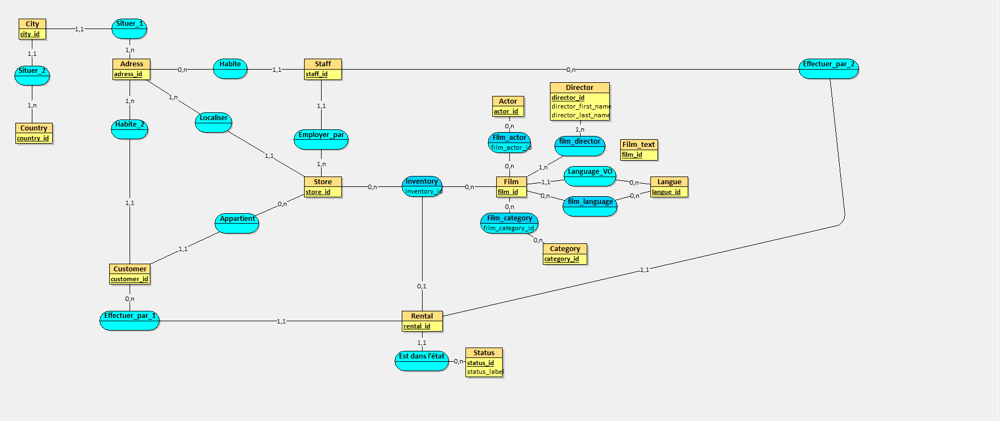
Modèle conceptuel de données — entités centrales (Film, Customer, Rental, Inventory) avec leurs relations et cardinalités.
- Le projet a nécessité une phase d'analyse du cahier des charges, le découpage en composants interopérables (mobile, web, API, DB) et la définition d'une convention d'API commune avec les autres étudiants utilisant Toad.
- Modélisation complète des entités métier (films, stocks, clients, magasins, employés) dans Peach, exposées et administrables via l'API Toad et les interfaces Mario / Luigi.
- L'interface web Mario constitue le point d'accès en ligne pour le personnel de l'organisation — gestion du catalogue, des stocks et des locations accessible depuis un navigateur.
- L'application Luigi est packagée pour fonctionner sur un large parc d'appareils Android, avec une gestion des URL de déploiement adaptable selon l'environnement (émulateur, serveur de test, production).
- Chaque endpoint REST de Toad a été testé via Postman — collection couvrant les scénarios nominaux et les cas d'erreur. Validation manuelle des parcours utilisateur de bout en bout sur Mario et Luigi.
- La vérification de disponibilité du stock avant location évite les incohérences et garantit la fiabilité du service pour l'utilisateur final, côté API et côté interface.
- Projet mené sur toute l'année scolaire, développant l'autonomie technique et la capacité à monter en compétence sur un stack complet mobile, web et API.